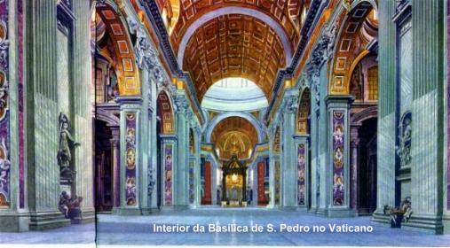

Os Atos apócrifos e os Atos de São Pedro e São
Paulo, atribuídos a Pedro, embora não reconhecidos pela Igreja como livros canônicos,
pertencem igualmente à série de testemunhos importantes sobre a obra e a morte dos
dois Apóstolos em Roma. Existe uma coletânea de livros editados na França
em 1870, onde se encontram diversos textos interessantes dos mencionados
manuscritos, os quais testemunham a presença e a obra de Pedro e Paulo em
Roma e na Ásia Menor. Também há vários fragmentos que foram preservados
por Clemente de Alexandria e publicados. (cf. Dobschuts, "Das Kerygma
Petri kritisch untersucht" em " Texte u. Untersuchungen ", XI,
I, Leipzig, 1893).
DURAÇÃO
DO TRABALHO

As informações acima,
tem a finalidade de suprir a ausência de elementos mais precisos sobre
a atividade do Apóstolo Pedro e de sua morte em Roma. Podemos
acrescentar que o trabalho de Pedro abrangeu um período razoavelmente longo.
Esta conclusão é confirmada pela voz unânime da Tradição que, já na metade
do segundo século, designou o Príncipe dos Apóstolos como fundador da Igreja
romana. É praticamente certo que Pedro viajou para Roma depois de 49 A.D. Sobre
a duração do trabalho evangelizador de Pedro em Roma, há também controvérsias
e não podemos seguir integralmente os dados cronológicos de Eusébio e Jerônimo,
cujas considerações foram estabelecidas sobre crônicas do terceiro século,
as quais não fazem parte da Velha Tradição, mas apenas constituem o resultado
de cálculos que tiveram por base uma lista episcopal datada de fins do segundo
século. Conforme Eusébio, foi apresentado no terceiro século o "Chronograph 354",
que estabelece um tempo de vinte e cinco anos de pontificado para São Pedro em
Roma. Entretanto, consideramos o mencionado tempo excessivamente longo, se
lembrarmos que a chegada de Pedro a Roma foi em 49. De acordo com a "Crônica" de Eusébio,
o décimo terceiro ou décimo quarto ano do reinado de Nero é considerado como o ano
em que ocorreu a morte de Pedro e Paulo (ou seja, ano 67-68). Assim sendo, como Pedro
chegou a Roma no ano 49 e morreu no ano 67, a relação apresentada pelo “Chronograph 354†que fixa o
seu episcopado em vinte e cinco anos, evidentemente não está correta e assim,
o tempo de 25 anos deverá ser reduzido para dezoito anos, (porque 67 - 49 = 18
anos) (cf. Bartolini, Roma, 1868). Na verdade o período de 18 anos é um tempo
mais condizente com os fatos conservados pela Tradição Cristã.

Próxima Página
Página Anterior
Retorna ao Índice